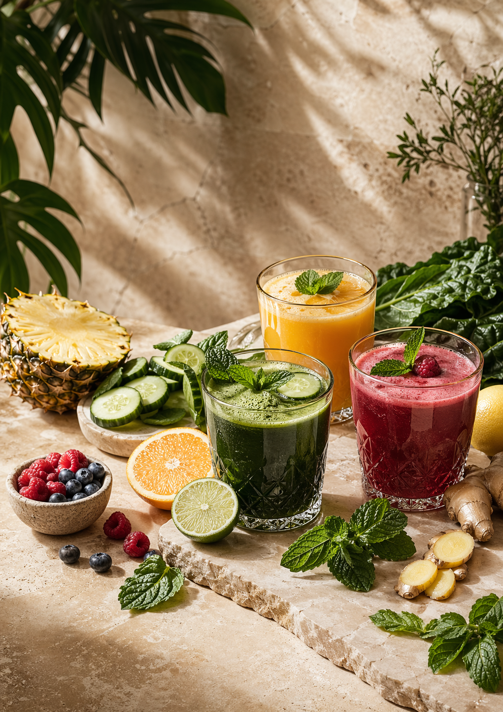
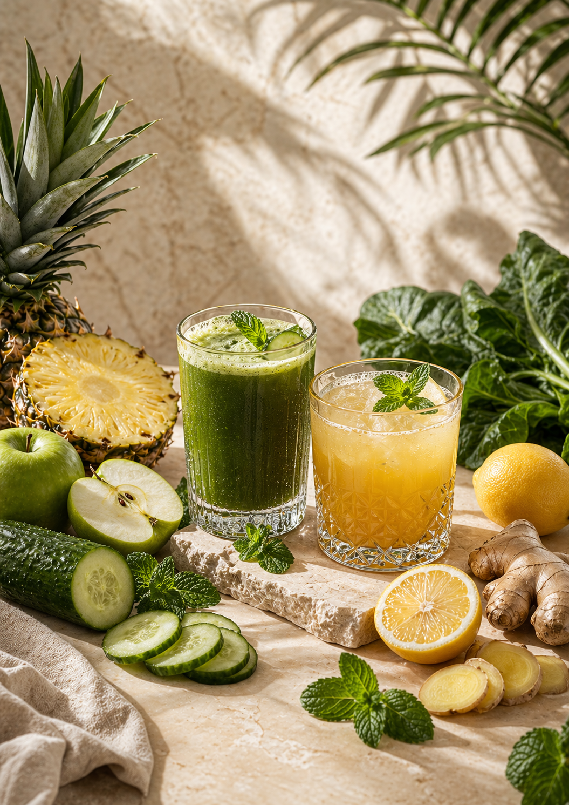
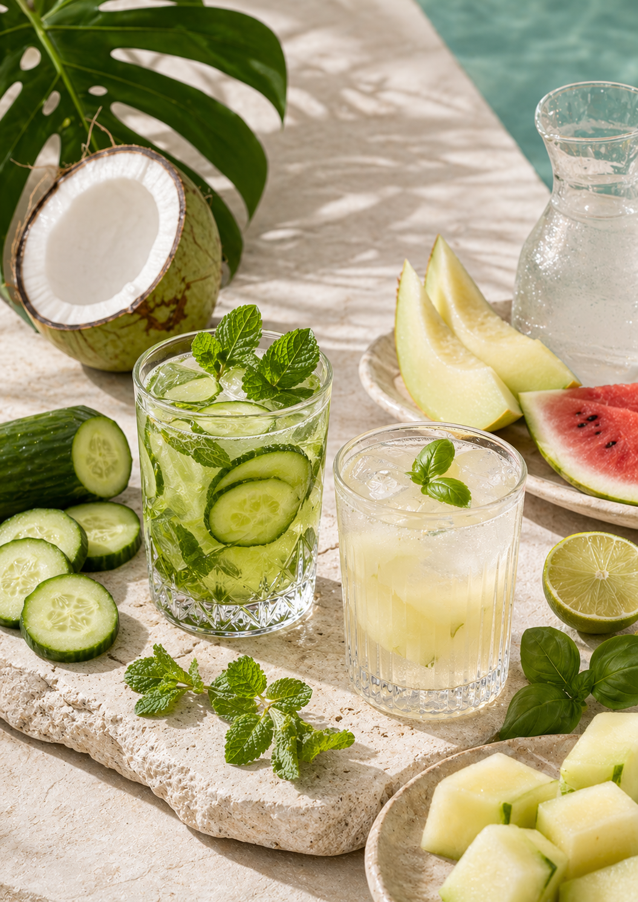
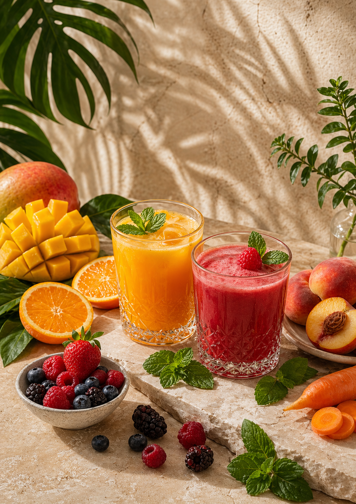
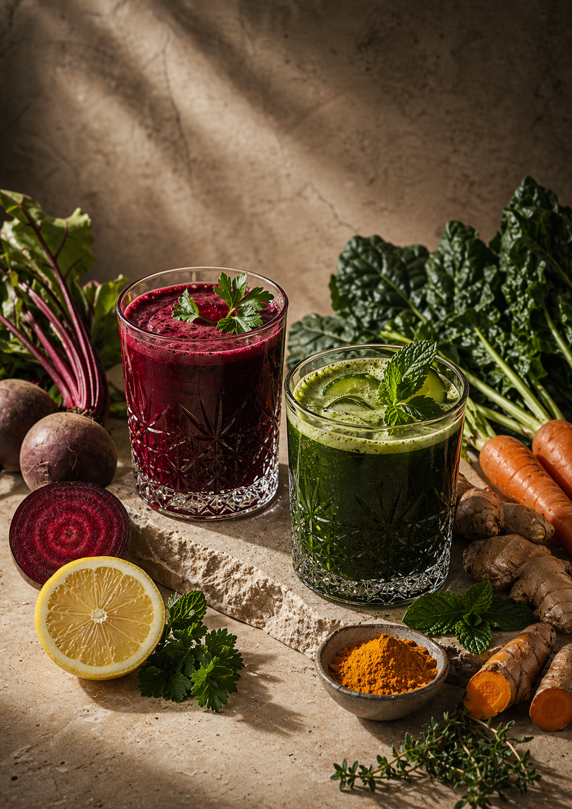
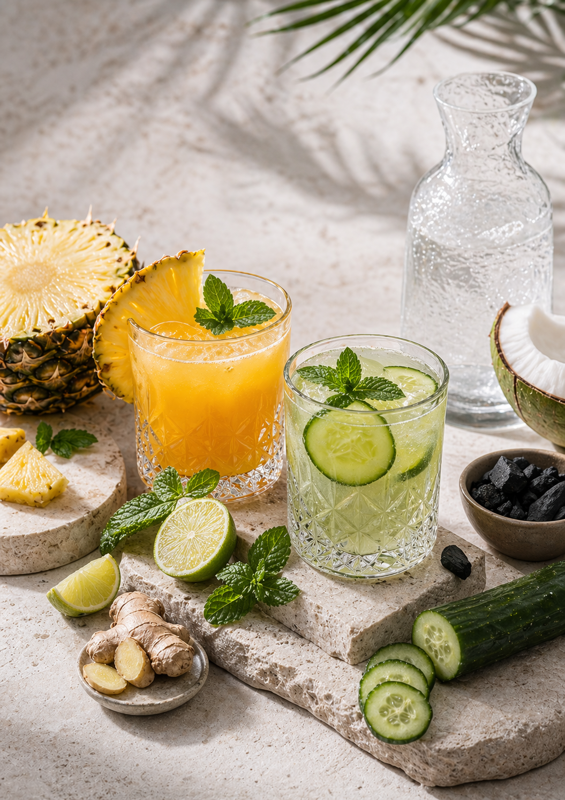

Acordar mais leve, se olhar com mais carinho e voltar a sentir controle sobre a própria rotina.
Seu novo começo pode ser leve
Um guia para quem quer emagrecer, desinchar e voltar a se sentir bem no próprio corpo.
O ebook 50 Receitas de Sucos Detox foi criado para mulheres e homens que querem uma rotina mais saudável sem radicalismo. Você aprende a preparar sucos gostosos, funcionais e fáceis de encaixar no dia a dia.
50 receitas práticas
Plano detox de 7 dias
Receitas por objetivo
Mais energia e menos inchaço
Para quem sente
inchaço, cansaço, peso e dificuldade para manter constância
Para quem busca
leveza, hábitos melhores, digestão mais tranquila e mais disposição

Receitas bonitas, orientações claras, plano de 7 dias e um material fácil de colocar em prática.
Você não precisa viver de restrição para começar a cuidar de si.
Este material foi pensado para trazer clareza, rotina e prazer. É um passo simples para quem quer desinchar, sentir mais energia e se alimentar com mais consciência.
Pequenas decisões diárias mudam como você se sente ao longo da semana.
Quando o preparo é fácil e gostoso, a constância fica muito mais possível. E é isso que o ebook entrega: praticidade com direção.
Por que esse ebook ajuda
Ele transforma vontade em ação com receitas fáceis, bonitas e orientadas por objetivo.
Em vez de um monte de receita solta, você recebe um caminho organizado para escolher o suco certo para o momento certo.
Para desinchar
Receitas leves, refrescantes e estratégicas para dias em que o corpo parece pesado e retido.
Para emagrecer com leveza
Combinações que apoiam saciedade, organização da rotina e escolhas mais inteligentes.
Para pele e energia
Sucos com visual bonito e ingredientes pensados para vitalidade, brilho e bem-estar.
Para recomeçar
Plano de 7 dias e receitas pós-exagero para quando você sente que precisa voltar ao eixo.
O que você recebe
Um material completo para usar no dia a dia sem ficar perdida no que preparar.

Emagrecimento
15 receitas para quem quer secar com mais inteligência e menos culpa.
Ajuda a organizar o apetite, trazer mais saciedade e começar o dia com intenção.

Desinchar
10 receitas para aliviar retenção e sensação de peso.
Perfeitas para dias quentes, pós-fim de semana ou quando o corpo pede alívio.

Pele e energia
10 receitas para mais brilho, vitalidade e disposição.
Combinações que fazem você sentir cuidado por dentro e por fora.

Limpeza do fígado
10 receitas para momentos de excesso e recomeço.
Uma seleção mais funcional para quando a digestão está lenta e o corpo pede pausa.

Pós-festa e detox profundo
5 receitas para se reorganizar depois dos exageros e voltar a se sentir no controle.
Inclui também um plano detox de 7 dias para recomeçar com mais clareza.
Dentro do ebook
Você não recebe só receitas. Recebe direção.
O material começa explicando como usar os sucos detox, passa pelos ingredientes mais interessantes, ensina combinações melhores e termina com receitas organizadas por necessidade real da rotina.
Para quem é
Esse ebook faz sentido para você se hoje você se reconhece em pelo menos uma dessas situações.
Você acorda inchada
e quer começar o dia com algo leve, gostoso e que ajude seu corpo a funcionar melhor.
Você quer emagrecer
mas está cansada de promessas exageradas e busca algo mais realista para encaixar na rotina.
Você sente cansaço constante
e quer opções que apoiem mais energia, hidratação e sensação de autocuidado.
Você quer recomeçar
depois de exageros, maus hábitos ou uma fase em que se deixou em segundo plano.
FAQ
Dúvidas comuns antes de começar.
Esse ebook serve para iniciantes?
Sim. O conteúdo foi organizado de forma simples, com explicações e receitas fáceis de aplicar na rotina.
As receitas são difíceis ou caras?
Não. A maioria usa ingredientes acessíveis e combinações que você consegue preparar rapidamente.
Eu recebo só as receitas?
Não. Você recebe também orientações, benefícios dos ingredientes, organização por objetivo e um plano detox de 7 dias.
O ebook substitui médico ou nutricionista?
Não. Ele é um material educativo e de apoio para hábitos melhores, sem substituir acompanhamento individual.
Seu próximo passo
Comece hoje uma rotina mais leve, mais bonita e mais alinhada com a saúde que você quer construir.
Se você quer um material prático para cuidar melhor do corpo, sentir menos inchaço e ganhar mais energia ao longo da semana, este ebook foi feito para você.
Acesso imediato
Quero meu ebook agoraDepois da compra, você recebe o material para começar ainda hoje.